Защищено:
"__"_____________2017 г
Отчет по лабораторной работе № 2-6 по курсу
БКИТ
ИСПОЛНИТЕЛЬ: студент группы ИУ5-33
_____________________ (подпись)
Нечаев А.А. "__"_____________2017 г.
Москва, МГТУ — 2017
Оглавление
Ц
ель выполнения
....................................................................................................................... .. . .. .. .. . .. .. .. .. . .. ..3
В ыполнена работа
................................................................................................................................... .. .. . .. .. .4
C
H_ESP_SN
......................................................................................................................................... .. .. .. .. .. . .. .. .5
С
бор данных
............................................................................................................................. .. .. .. . .. .. .. .. .. . .. .. .9
П
ередача данных на удалённый сервис
.............................................................................. .. . .. .. .. .. . .. .. .. .. . ..1 0
Л
окальное взаимодействие
...................................................................................................................... .. .11
D
ISP_ESP_SN
.......................................................................................................................................... .. .. . .. .. .14
П
еределка FBI
....................................................................................................................................... .. .. . .. .. .15
О
бъединение CH_ESP_SN и DISP_ESP_SN
............................................................................................... .. . .. ..1 6
Цель выполнения
Разработать часть системы умного дома.
Блок схема проэкта системы:
Система должна иметь возможность работать как в полном (централизованном) режиме,
так и в (урезанном) режиме в прямого взаимодействия.
Каждое устройство с мощностью более 2ВА должно иметь отдельное подключение к сети питания.
Как основное связующие звено системы в полном режиме должна выступать ГПИУШ(Главная
Питающая и Управляющая Шина) которая должна состоять из:
1. GND - Общая земля питания
2. Vmain – Главное напряжение питания (Для централизованного питания маломощных устр)
3. Vres – Резервируемое питание (Для главного и резервного питания жизнено важных устройств)
4. Alarm -Тревожный сигнал (Притянут к Vres через 1ком резистор и шунтирующие конденсаторы)
резервная сигнальная линяя тревоги (для поднятия тревоги подтягивается к GND)
Напр <= 1/3(Vres) тревога.
5. RS485 A линии обмена данными (прокладываются отдельной витой парой)
6. RS485 B
Для Vres и Vmain допустимым считается напряжение в пределах от 11 до 30 Вольт.
С возможными кратковременными >1мин Vmin= 9В Vmax= 40В
Также к устройствам KUIP, CH_ESP_SN, DISP_ESP_SN могут быть подключены сторонние устройства и
системы сигнализации.
В случае обнаружения посадки на линии Alarm, все устройства должны прервать работу с RS485 и
ожидать запроса от ведущего KUIP, в течение 20 сек, и при его поступлении ответить эхо ответом, либо
причиной вызова тревоги. В случае отсутствия запроса как по RS485 так и по Wi-Fi линиям устройства
вызвавшая срабатывание должна самостоятельно опросить другие устройства. В случае отсутствия
запросов в течении 20 сек, либо сразу при пропадании Vres все системы переходят в автономный
режим при этом включаются все системы аварийного освещения, а в случае пропадания питающего
напряжении в сети 220в и оповещения.
Выполнена работа
Были разработаны и изготовлены устройства:
•
ch_esp_sn - для сбора данных с датчиков (Устройство снятия показаний с датчиков)
•
disp_esp_sn - для отображения данных в реальном времени, сбора данных, и исполнения
команд (Устройство отображения информации)
Также для отображения данных вместе с показом слайд шоу была модифицирована консольная
программа fbi (Frame Buffer Imageviewer), теперь вместо статусной строки отображаются данные с
устройства ch_esp_sn в реальном времени.
CH_ESP_SN
По сути это устройство сбора данных датчиков и их первичной обработки.
Состоит данное устройство на данный момент из WIFI модуля (ESP8266) со встроенным МК и
запущенной ОС реального времени на нём, и AVR микроконтроллера ATmega328p-pu подключенным к
нему по средствам SPI и UART интерфейсов(далее планируется оставить только SPI связь), а также
периферийных устройств.
SPI интерфейс используется сейчас только для перепрошивки МК.
Основной обмен данными происходить по средствам UART интерфейса.
Для разработки всех прошивок используется набор библиотек из Arduino SDK, его адаптация под
ESP8266. Данный вариант был выбран ввиду его простоты и достаточной быстроты для поставленной
задачи.
Блок схема устройства
На данный момент на устройстве установлены следующие датчики:
•
DHT-21 - Влажность и температура
•
BH1750 – Освещённость I2C
•
BMP280 – Давление I2C
•
MQ-7 и MQ-9 Угарный и Горючий газы (аналоговые)
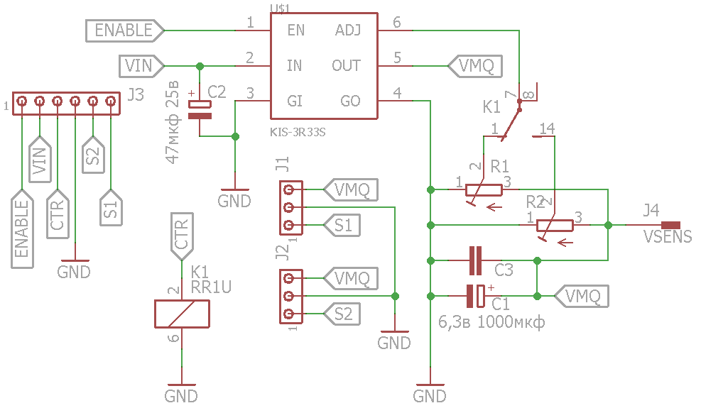
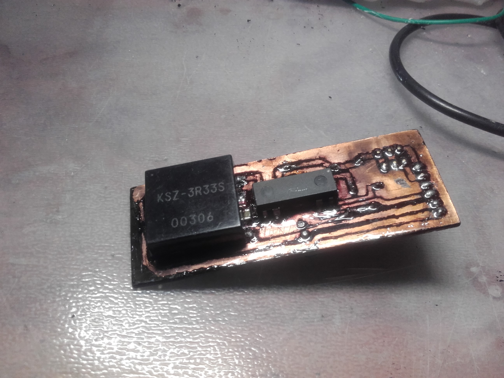
Для обеспечения требуемого режима питания датчиков газа 90 сек 1,45В и 60 сек 5В была разработана
схема управления преобразователя напряжения на основе модуля kis-3r33, 2 подстроечных резисторов
и герконового реле переключающего их по команде МК.
Принципиальная схема модуля питания аналоговых датчиков газа.
Фото готового модуля
Более подробная информация
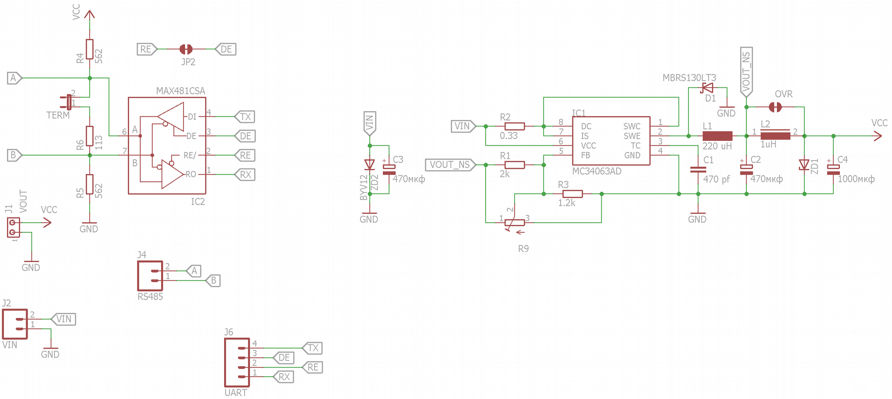
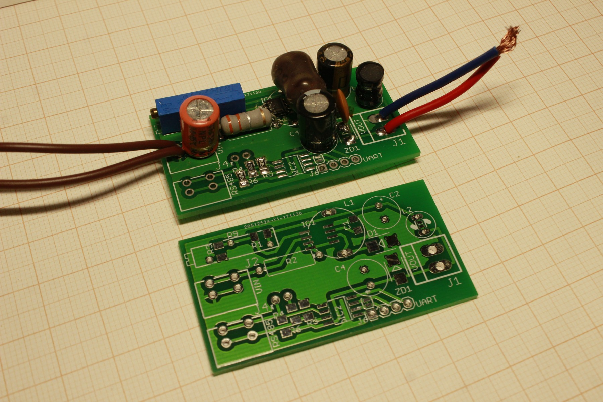
Для питания всего устройства был разработан модуль преобразователя напряжения на основе ШИМ
контроллера MC34063, он был совмещён с преобразователем интерфейсов RS485-UART.
Принципиальная схема модуля
Относительно новая версия преобразователя.
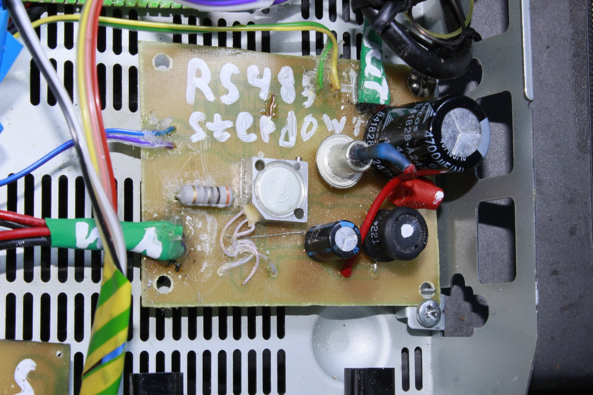
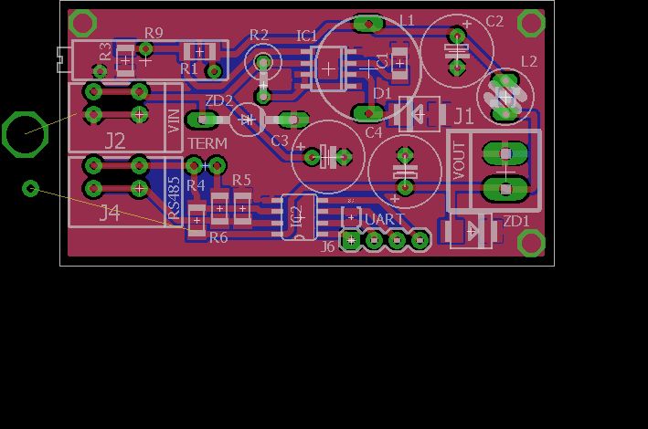
Одна из первых версий, работает в составе ch_esp_sn по сей день (на выходе
установлен Д815В)
Разводка последней версии платы
Сбор данных
Опрос датчиков производится при помощи их опроса через равные промежутки времени
микроконтроллером, далее МК.
При этом предусмотрена и используется возможность опроса с двойным и более интервалом (для
датчиков с медленным обновлением показаний).
Для уменьшения воздействия внешних погрешностей используется двухуровневая система
усреднения.
1. Подсчёт среднего арифметического за каждые 30 сек работы.
2. Плавающие средние (данные полученные после 1-ого пункта заносятся в массив рассчитанный
на ~7мин где индекс прибавляется каждые 30 секунд , а в случае достижения максимума
сбрасывается в ноль)
При запросе данных у МК, производится получение арифметического среднего массива полученного 2
пунктом, после чего данные передаются с помощью протокола A1 DSP на ESP8622 где происходит их
дальнейшая обработка.
Также выполнен алгоритм переключения напряжения на датчиках газа, и раздельный сбор данных с
них.
При этом, на данный момент ESP8266 занимается только расчётом значений ppm для датчиков газа и
их подстройкой.
Система обработки данных с датчиков газа основывается на вольном переносе библиотеки TroykaMQ,
и для расчётов используются константы взятые из неё же.
Это было сделано ввиду невозможности калибровки датчиков в домашних условиях, и обеспечивает
хотя бы приблизительные к реальности данные.
Кроме этого МК выполняет контроль напряжения преобразователя и в случае его выходов за
допустимые значения выключает и передаёт данные об этом ESP(косвенно 0В на выходе
преобразователя при обоих режимах)
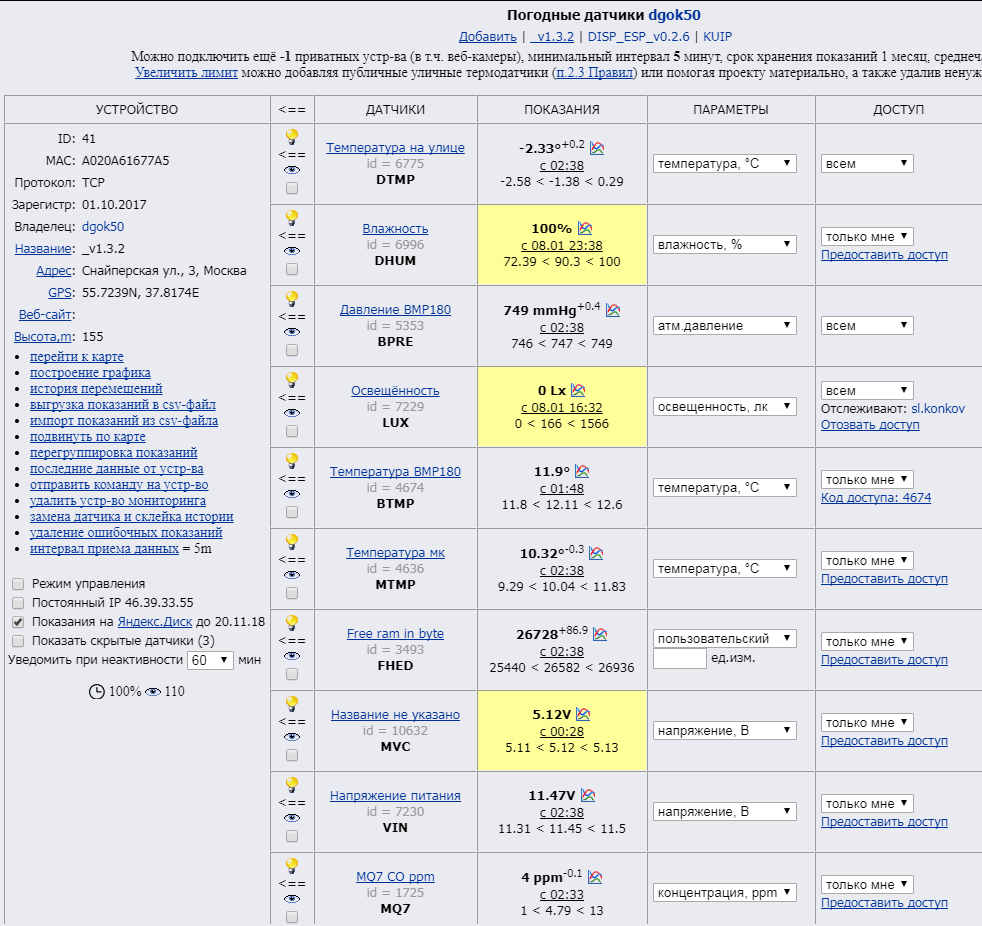
Передача данных на удалённый сервис
Устройство поддерживает передачу данных на сервис народного мониторинга narodmon.ru, используя
их API. При этом передача выполняется каждые 5 мин, для этого используется библиотека Ticker
которая позволяет задать функцию которая выполняется с разрывом в указанной интервал времени.
В данном случае функция не вызывает отправку данных напрямую а использует байтовую переменную
в качестве флага который обрабатывается в главном цикле вызывая формирование пакета и отправку
данных. Такая система позволяет контролировать процесс отправки и избежать повторную попытку
отправки пока вызванная ранее ещё не закончена. При считывании флага проверяются текущие
значение других флагов, и в случае отсутствия запрещающих.
После чего управление передаётся функции отправки данных. Та в свою очередь выполняет
формирование пакета для отправки. После чего открывается сокет и выполняется соединение с
сервером narodmon.ru по порту 8283, в случае ошибки функция возвращает код ошибки(false). В случае
успешного соединения выполняется формирование пакета, на основе данных находящихся в
глобальных переменных. После чего выполняется отправка сформированного пакета, далее
выполняется ожидание ответа сервера в течении 1,2 секунды. После этого в случае получения ответа
выполняется его обработка, так если сервер отвечает «OK», или первый символ является #(получена
удалённая команда, в данном случае игнорируется), либо ответ начинается с INTERVAL (слишком
маленькая задержка после предыдущей передачи данных) функция завершается с успешным кодом
(true). В случае не получения ответа, либо невозможности опознать ответ, функция возвращает
ошибку(false).
После выхода из функции выполняется обработка кода возврата, в случае успешного кода значение
флага обновляется и управление передается главному циклу. А в случае возврата кода ошибки
устанавливается флаг повторной отправки, которая производится через 1 минуту после очередного
считывания данных датчиков. Также увеличивается на один значения счётчика ошибок.
Результатом выполнения всех этих действий
данные отправляются на сайт народного
мониторинга где их можно просмотреть по
ссылки: https://narodmon.ru/41.
Пример отправленного пакета:
2018-01-09 03:13:20 46.39.33.55 TCP
#A0-20-A6-16-77-A5#_v1.3.2
#FHED#26728#Free ram in byte
#MVC#5.12
#MTMP#10.48
#BTMP#11.80
#BPRE#749.02
#DTMP#-2.23
#DHUM#100.00
#LUX#0.00
#MQ7#1#MQ7 CO ppm
#MQ9#4#MQ9 CO ppm
#MQ9L#7#MQ9 LPG ppm
#VIN#11.45
##
Данные отображаемые на сайте народного
мониторинга
Локальное взаимодействие
Для локального взаимодействия на устройстве предусмотрены несколько интерфейсов:
•
GET запросы для изменения настроек и выполнения команд (на данный момент без автор.)
•
A1_DSP (Data in String Protocol) Протокол получения показаний в виде ASCII строки,
используется как для внутреннего обмена с МК, так и для выдачи данных по запросу из
локальной сети. URL /a1pr но используется только для считывания данных.
•
XML генерируемый по шаблону, используется только для считывания данных.
A1_DSP (Data in String Protocol)
Был разработан как простой протокол для обмена данными между устройствами в ЛВС и внутри
одного устройства, это было сделано для избежания проблем совместимости ввиду разных размеров
переменных на разных устройствах.
A1_DSP состоит из строки с парами (название:данные) оканчивающийся знаком «;»
Где разделителями между парами являются пробелы.
Сама пара состоит из названия (используются строго заглавными латинские буквы),
и данных в виде числа (целого, или с плавающий точкой).
NAME1:123.02 NAME2:321.08;
На выходе требуется получить либо парные массивы (mas_name[i] mas_d[i], где i порядковый номер)
либо ассоциативного массива по (типу map в c++) mas[NAME1]
Пример строки:
MQV:1.42 VMQ1:0.00 VMQ2:0.07 VIN:11.77 MCVCC:5.00 MCTMP:13.62 LUX:279.00 DHUM:68.43
DTMP:11.23 BPRE:774.10 BTMP:22.02 RDY=1;
MQV:1.42 //Напряжение датчиков MQ
VMQ1:0.00 //Выходное напр датчика 1
VMQ2:0.07 //Выходное напр датчика 2
VIN:11.77 //Входное напряжение
MCVCC:5.00 //Напряжение на шине 5В (atmega328)
MCTMP:13.62 //Температура (atmega328)
LUX:279.00 //Освещённость
DHUM:68.43 //Влажность датчика (DHT21)
DTMP:11.23 //Температура датчика (DHT21)
BPRE:774.10 //Давление (BMP180)
BTMP:22.02 //Температура датчика (BMP180)
RDY:1 //Усреднённые данные 1-готовы 0-нет
Пример сгенерированного XML файла
<?xml version="1.0" encoding="utf-8"?>
<esp>
<fw>
<b_time>04:19:10</b_time>
<b_date>Jan 2 2018</b_date>
<ver>132</ver>
</fw>
<status>
<esp_vcc>3.074000</esp_vcc>
<mc_vcc>5.120000</mc_vcc>
<mc_tmp>10.770000</mc_tmp>
<data_recived>1</data_recived>
<data_redy>1.000000</data_redy>
</status>
<sensors>
<bmp_r>1</bmp_r>
<bmp>
<temp>11.890000</temp>
<pre>748.890015</pre>
</bmp>
<dht_r>1</dht_r>
<dht>
<temp>-2.350000</temp>
<hum>100.000000</hum>
</dht>
<lux_r>1</lux_r>
<lux>0.000000</lux>
<else_r>1.000000</else_r>
<else>
<mq7co>9</mq7co>
<mq9co>5</mq9co>
<mq9LPG>8</mq9LPG>
<vin>11.440000</vin>
<mqv>1.430000</mqv>
<mqv5>5.010000</mqv5>
<mq7>0.050000</mq7>
<mq9>0.000000</mq9>
<mq9_5>0.760000</mq9_5>
</else>
</sensors>
</esp>
Возможные GET запросы:
/
Вывод html страницы с ссылками на элементы управления и инфо страниц.
/update Обновление прошивки по воздуху OTA, через POST (type='file' name='update')
/online_update Обновление прошивки с сервера.
/config.json Скачивание текущего конфигурационного файла.
/xml.xml Получение данных датчиков в виде xml файла.
/a1pr Получение данных датчиков о протоколу A1 DSP.
/sysinfo.txt Инфо-страница о состояние устройства.
/set?параметр Установка параметров либо выполнение команд требующих доп авторизации
/set?reset_ro=пароль Сброс констант для датчиков газа
/set?format=пароль Форматирование ФС устройства
/i2c_scan.txt Сканирование I2C шины МК и вывод адресов устройств на ней
/serial_in.txt Прямой запрос данных с микроконтроллера в протоколе A1 DSP
/parse.txt Принудительный запрос и парсинг данных с МК
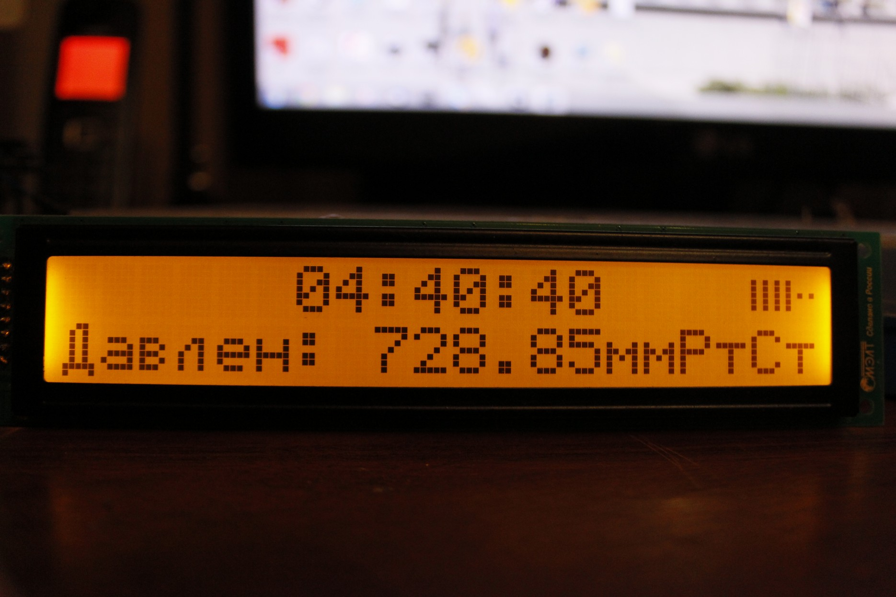
DISP_ESP_SN
По сути изначально является устройством вывода информации, но по мере разработки ввиду
достаточного количества незанятых контактов, было принято решение добавить возможность
управления устройствами.
На данный момент разработан функционал для получения команд управления как с сайта народного
мониторинга так и по средством get запросов и A1 DSP протоколу.
Однако по умолчанию единственным управляемым значением является подсветка дисплея.
В основе своей код повторяет CH_ESP_SN только без МК, и с использованием функции парсинга ответа
narodmon.
Также в устройство встроен собственный датчик температуры и влажности DHT-22 данные с которого
отображаются на экране и передаются на сервер, а также доступны по протоколам.
Графический интерфейс разрабатывался с учётом имеющегося оборудования и средств отображения. В
виду этого он представляет две строки в первой статично обрисовывается текущее
время(синхронизируется по NTP при запуске) и в крайне правом углу иконка мощности сигнала Wi-Fi.
А во второй строке меняясь каждые 20 сек отображается информация полученная как с удалённых так
и с локальных датчиков.
Для экономии портов ввода вывода дисплей был подключён через сдвиговый регистр M74HC595, для
его работы на esp8266 было произведено портирование библиотеки ShiftRegLCD123(Arduino) с учётом
особенностей работы ОС реального времени(конкретно WDT) и взаимодействия с GPIO. Также была
добавлена поддержка русского языка, посредством таблицы смещений(кодов символов).
Внешний вид при использование знакогенерирующего ЖКИ MT-20S2M
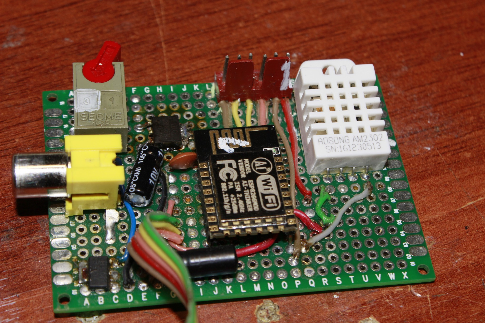
Внешний вид прототипа DISP_ESP_SN
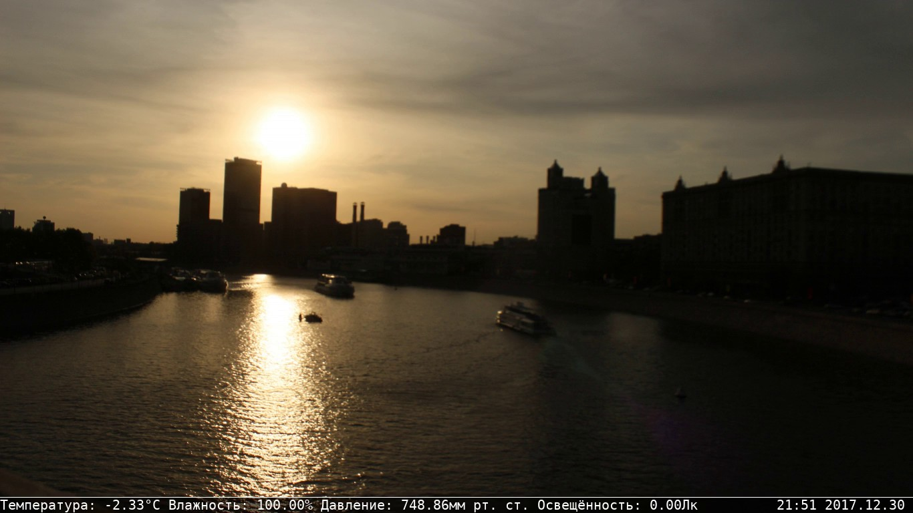
Переделка FBI
Для отображения данных о текущей погоде (на данный момент) и других данных(в перспективе), было
выбрано использование так называемого Linux Frame Buffer Device устройства ОС на базе ядра Linux.
Ввиду возможности его использования на большом количестве устройств, как обычных ПК так и
встраиваемой техники и мобильных устройствах, а также минимальным требованием по
производительности системы и объёму ОЗУ. Сам по себе Linux Frame Buffer Device есть не что иное, как
аппаратно независимый интерфейс для вывода и захвата изображения на экране.
Ввиду нецелесообразности разработки полностью собственного переложения для вывода данных
было принято решение использовать как основу имеющееся приложение FBI (Linux framebuffer
imageviewer). Информация была внедрена туда путём незначительной модификации кода, а именно
заменой стандартной информационной строки на собственную формируемую на основе данных
полученных по A1 DSP, по средством libcurl, от назначенного устройства. Также стоит отметить удобный
внутренний функционал отрисовки самой программы, который позволяет достаточно просто вывести
любую информацию в любую область экрана. В дальнейшем планируется отделить код прорисовки
информации от кода стандартной инфо строки, а также добавить ключи для управления этим. Также
планируется разработка резидентной программы оболочки, для использования как прямой терминал
управления умным домом. И отделения строки информации для включения и конфигурации
отдельным ключом, а также добавления локального сокета для взаимодействия с другими
программами.
Пример экрана отображаемого пользователю
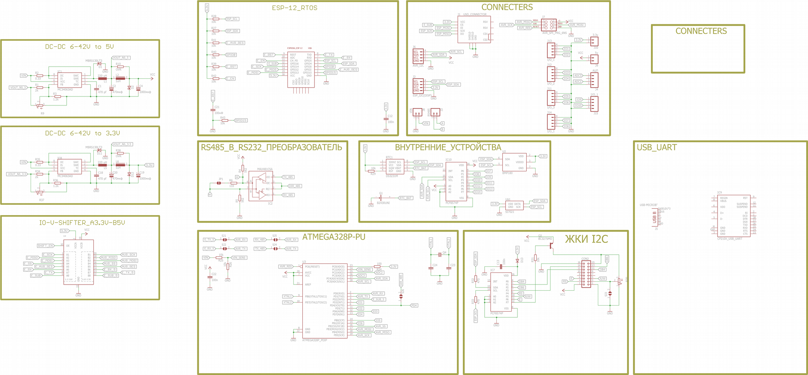
Объединение CH_ESP_SN и DISP_ESP_SN
После разработки и запуска описанной выше системы стало понятно, что для устройств
DISP_ESP_SN(отображения информации и управления) и CH_ESP_SN(устройства регистрации данных
датчиков) можно создать унифицированную аппаратную платформу, из имеющихся на рынке
компонентов.
Но ввиду недостатка времени работы по данному направлению не были закончены.
Ниже представлена незаконченная принципиальная схема.